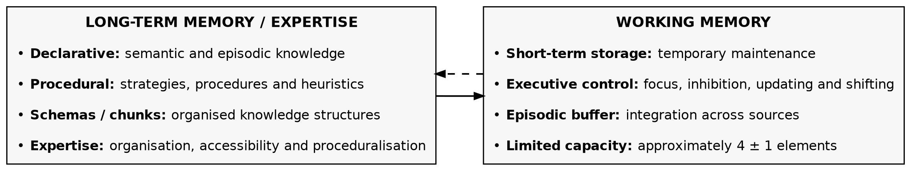
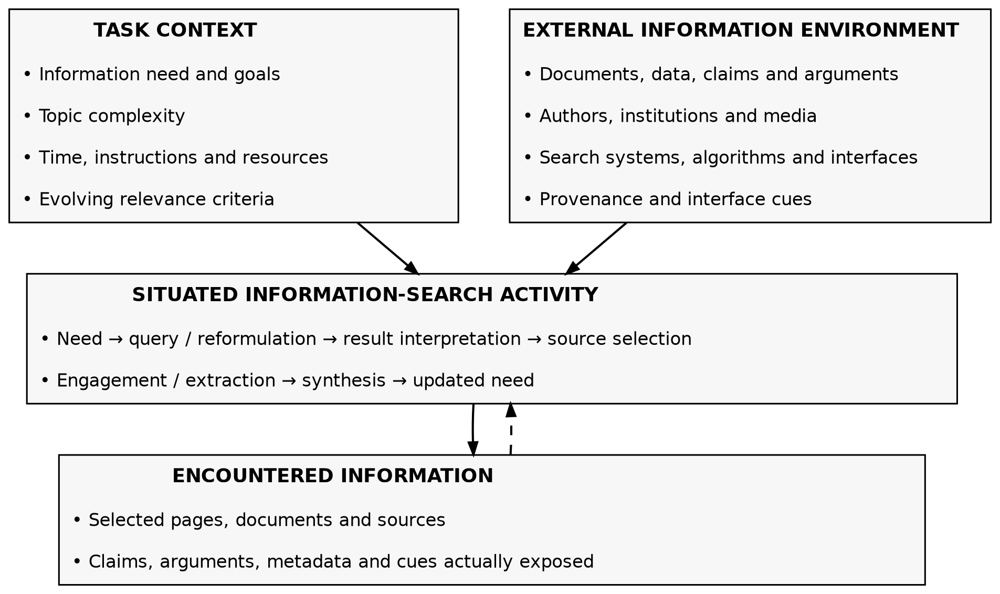
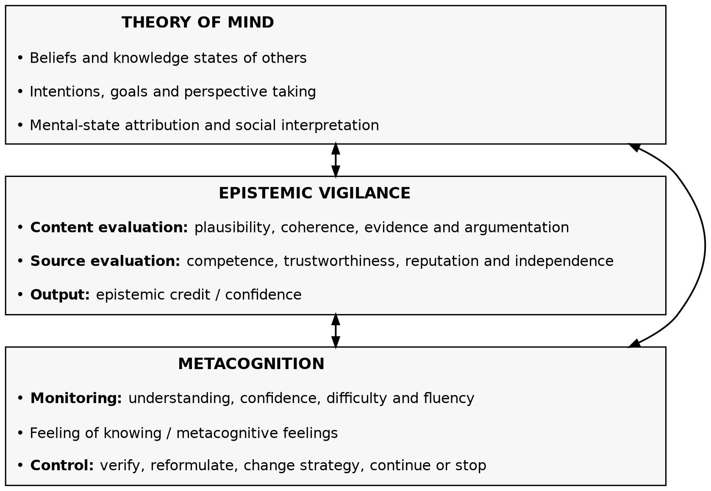
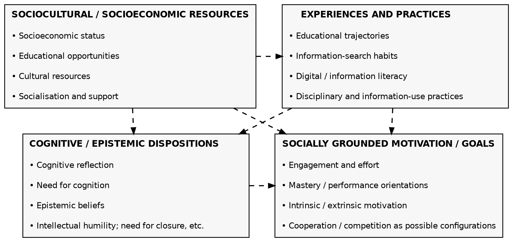
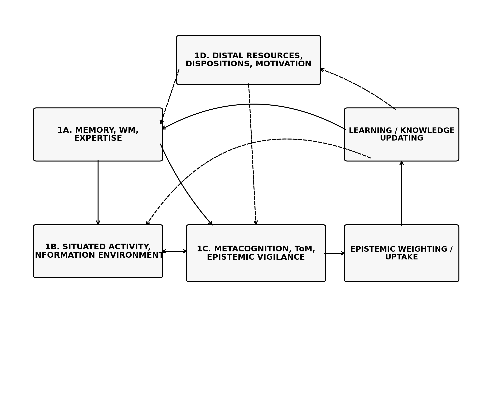
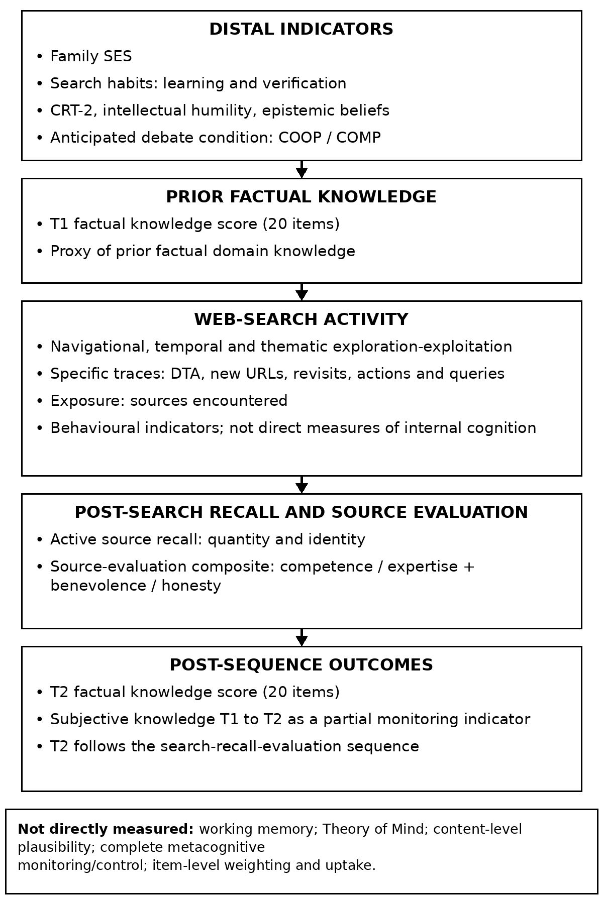
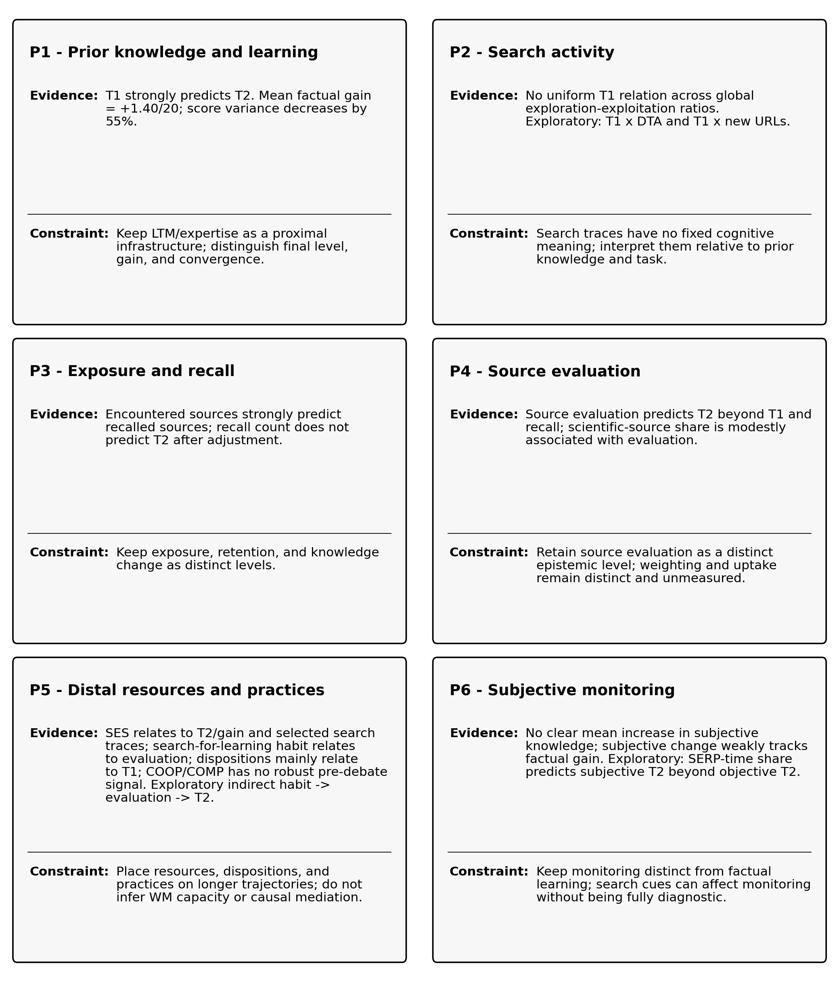

Prior Knowledge and Learning from Open Web Search
MOVICI Working Paper 02
Resources Download PDF Data & replication package
Video Presentation
Abstract
Background. Open Web search exposes learners to heterogeneous information, but access alone does not ensure retention, appropriate source evaluation, or integration into knowledge. These demands are especially salient for controversial topics, where learners must coordinate prior knowledge, search activity, and epistemic judgements.
Objectives. We examined how prior factual knowledge, observable search activity, exposure and recall, and epistemic source evaluation were associated with factual knowledge after an open Web-search task, using CAVL as a working conceptual framework.
Methods. Ninety-six participants completed a 20-item factual-knowledge inventory, searched the Web individually for approximately 20 minutes about animal-protein consumption, recalled and evaluated sources and arguments, and then completed the inventory again. Search traces distinguished navigational, temporal, and thematic exploration-exploitation. Regression inference used CR2 cluster-robust standard errors across 34 sessions.
Results and Conclusions. Factual knowledge increased and scores became less dispersed across the search-recall-evaluation sequence, while prior knowledge remained strongly associated with post-sequence knowledge. Global exploration-exploitation ratios did not define one learner-independent strategy, although specific search indicators showed exploratory expertise-dependent patterns. Wider exposure predicted more source recall, but recall quantity added little information about post-sequence factual knowledge. In contrast, more favourable source evaluations remained associated with later factual knowledge beyond prior knowledge, socioeconomic status, condition, and recall. These findings support separating observable activity, exposure, retention, source evaluation, and knowledge change, and caution against treating search logs as direct measures of internal cognitive processing.
Keywords: Web search; prior knowledge; exploration–exploitation; source evaluation; search as learning; epistemic vigilance
Lay Summary
What is currently known about this topic
Prior knowledge shapes how learners search for and understand Web information.
Clicks, queries, and time have no fixed cognitive meaning across learners and tasks.
Source evaluation is central when learners use heterogeneous online information.
What does this paper add?
Factual knowledge increased and scores converged after the search sequence.
Global exploration-exploitation ratios did not reveal one universal strategy.
Source evaluation predicted later knowledge beyond prior knowledge and recall.
Implications for practice and/or policy
Scaffold open Web search according to learners’ prior domain knowledge.
Do not interpret clicks, time, or exploration as direct measures of learning.
Teach calibrated source evaluation rather than indiscriminate scepticism.
1. Introduction
Digital environments give learners access to vast information, but access is not learning. Pages may be seen but not opened, opened but not understood, or remembered without being integrated; sources may appear credible without changing knowledge.
Open search therefore requires users to define the problem while searching, formulate and reformulate queries, choose intermediaries and documents, and decide when to stop.
Open Web search can thus be treated as problem solving under bounded rationality rather than retrieval of a fixed answer (Simon, 1955, 1956; Newell & Simon, 1972; Marchionini, 1995; Pirolli & Card, 1999). Search as Learning adds that searching changes the knowledge state guiding subsequent search steps (Rieh et al., 2016; Vakkari, 2016), and empirical studies report measurable learning across information-search sessions (Collins-Thompson et al., 2016; Gadiraju et al., 2018).
Controversial topics add a sourcing problem: relevant claims are distributed across domains, documents, and source types, and may converge, conflict, or address different aspects of the issue. Learners must therefore represent content, sources, and relations between documents while finding, comparing, evaluating, and integrating information (Perfetti et al., 1999; Rouet, 2006; Bråten et al., 2011; Anmarkrud et al., 2022).
These functions are often studied separately across learning, information retrieval, sourcing, reasoning, and digital-inequality research. MOVICI instead examines how several levels operate together, following Newell’s (1973) warning against fragmented psychological explanation.
MOVICI provides a setting in which these levels can be studied together while keeping the search relatively open. Participants had 20 minutes to search the Web about animal-protein consumption. The topic was multidimensional and controversial. Participants chose their queries, tools, sources and navigation paths. They also knew that the information would later be used in a cooperative or competitive debate.
After the search, participants recalled and evaluated sources and arguments. They then completed the T2 factual inventory. The T1-to-T2 change therefore covers the full search-recall-evaluation sequence. It is not a causal estimate of the 20-minute Web search alone.
This article asks one main question. How do prior knowledge, search activity, and epistemic evaluation relate to knowledge change during an open Web search task and its immediate post-search processing? We do not seek one single cause. We also do not infer internal cognitive processes directly from logs. We use CAVL, the Cognitive Architecture for Vigilant Learning (Vayre et al., 2026), as a working conceptual framework. CAVL separates functional levels and helps derive testable predictions from existing literature.
The contribution is both empirical and theoretical. Empirically, we relate initial knowledge, search behaviour, exposure and recall, epistemic source evaluation and T2 factual knowledge. Theoretically, we do not treat CAVL as an established theory. We ask which relations receive partial support, which need qualification and which remain untested. This makes it possible to connect expertise, situated activity, metacognition, social cognition and epistemic vigilance without presenting the architecture as an identified causal chain.
2. From Open Search to a Cognitive Architecture for Vigilant Learning
2.1. Search for learning as situated problem solving
Bounded rationality provides a first integration principle. For Simon (1955, 1956), behaviour cannot be evaluated apart from the environment in which it occurs. An action has value because it fits the agent, the available information, and the structure of the task. Web search illustrates this principle. The space of possible actions is large. The final state is only partly specified. Relevance criteria can change during the search.
Models of information search describe a dynamic coordination of operations. Users represent a need, choose a system, write a query, interpret results, select a document, extract information and revise the initial representation (Marchionini, 1995). Information Foraging Theory models part of this process as a trade-off between expected information value and the costs of exploring or staying with a source (Pirolli & Card, 1999). Two users can therefore follow different paths in the same environment because they recognise different cues and assign different values to the same actions.
Search as Learning adds a feedback loop. Prior knowledge guides search. Search can then modify the concepts and relations that guide later actions (Rieh et al., 2016; Vakkari, 2016). Search traces can therefore accompany learning without being the mechanism that explains it. Session features can predict part of knowledge state or gain, but these relations vary across tasks and samples (Gadiraju et al., 2018; Yu et al., 2021).
A sociotechnical view leads to the same caution. Tools and information structures are parts of the action environment. They are not autonomous causes of cognition (Vayre, 2016). Distributed-cognition approaches also show how internal representations, artefacts and external resources can be coordinated during activity (Hutchins, 1995; Hollan et al., 2000). In MOVICI, the search engine, an AI tool, or a document is therefore treated as a resource within a trajectory, not as an isolated cause of learning.
2.2. CAVL: a conceptual architecture
CAVL starts from a simple problem. Learning from external resources requires processing new information, but it also requires deciding how much epistemic credit to give that information. Classical cognitive architectures aim to specify relatively stable components and mechanisms that support cognition across tasks (Newell, 1990; Anderson, 1996, 2007; Kotseruba & Tsotsos, 2020). In the present article, however, architecture is used in a deliberately weaker, conceptual sense. CAVL organises functional distinctions and plausible dependencies that can guide predictions; it is not a computationally implemented architecture or a fully specified unified theory of cognition.
2.2.1. Long-term memory, working memory and expertise
CAVL gives long-term memory (LTM) a central role in culturally organised learning. The factual and scientific knowledge used in MOVICI is largely biologically secondary. Its acquisition depends on cultural and educational environments and on cumulative learning (Geary, 2008; Tricot & Sweller, 2014). Declarative and procedural knowledge can become organised into schemas and chunks in LTM. Some procedures can also become more readily available or automated (Chase & Simon, 1973; Anderson, 1996, 2007; Squire, 2004). Expertise is therefore more than a stock of facts. It is an organisation that makes some patterns easier to recognise and some procedures easier to retrieve.
Working memory (WM) has a different function. It temporarily maintains and manipulates limited information and supports executive control (Baddeley, 2000; Cowan, 2001; Miyake et al., 2000). Expertise does not simply increase a general WM capacity. Organised knowledge in LTM can make it possible to treat several elements as a meaningful unit. This reduces the number of separate elements that must be processed at one time (Sweller, 1988; Ericsson & Kintsch, 1995; Sweller et al., 2011, 2019).
CAVL therefore predicts a functional asymmetry. Prior knowledge should strongly structure performance and task processing. Search logs should not be read as transparent measures of WM effort or cognitive load. MOVICI measures factual knowledge. It does not measure WM directly. Figure 1A summarises this memory-expertise module. Across Figures 1A-1E, solid arrows indicate main functional relations, double-headed arrows reciprocal interactions, and dashed arrows modulation, developmental influence, or feedback over time.

Figure 1A. Long-term memory, working memory, and expertise. CAVL distinguishes the relatively durable organisation of knowledge in long-term memory from the limited, temporary processing functions of working memory. Expertise structures knowledge into schemas, chunks, and increasingly accessible procedures, thereby changing how working-memory resources are used rather than increasing their general capacity. The capacity label is schematic shorthand for roughly four chunks (about 3–5), following Cowan (2001).
2.2.2. Situated activity and the external information environment
CAVL also uses Simon's person-task-environment principle. A search operation has no fixed cognitive value outside the person and the task. The Web is an external sociotechnical environment. It makes search engines, documents, authors, institutions and other tools available. External information becomes a cognitive resource only when it is selected and processed.
Search is therefore placed at the level of observable activity. Queries, visits, revisits, time and exploration-exploitation trade-offs select the environment that the user encounters. The same trace can be produced by different internal processes. CAVL separates three levels: what the learner knows, what the learner does and the cognitive operations that give meaning to the encountered information. Figure 1B represents this situated activity-environment relation.

Figure 1B. Situated activity and the external information environment. Information search is represented as a situated and iterative activity in which task constraints and an independently existing information environment delimit the available possibilities. Search operations select a subset of this environment, producing the information actually encountered by the learner.
2.2.3. Metacognition, theory of mind, and epistemic vigilance
Epistemic vigilance is not an isolated box in CAVL. It is an integrative function. Evaluating a claim can use knowledge stored in LTM and representations active during the task. Evaluating a source can also require inferences about what the source knows, believes or intends. Theory of mind provides a general framework for representing the mental states and intentions of others (Premack & Woodruff, 1978; Frith & Frith, 2003). During Web search, these inferences concern authors, institutions and systems rather than only a present interlocutor.
Metacognition is also transversal. Monitoring assesses progress, understanding, certainty or difficulty. Control uses those assessments to continue, check, reformulate, change strategy or stop (Nelson & Narens, 1990). These assessments are not direct readouts of cognition. They depend on cues such as familiarity, fluency, difficulty felt and subjective understanding (Koriat, 1997). The diagnostic value of a cue depends on the task and on learning history.
Proust (2008, 2013) treats metacognitive feelings as part of cognitive control whose usefulness depends on calibration through repeated interactions with performance and the environment. Expertise can enrich the criteria available for recognising what is familiar, incomplete, or difficult without guaranteeing metacognitive accuracy. Digital-learning studies likewise show that prior knowledge changes combinations of cognitive and metacognitive strategies, while biases can remain (Griffin et al., 2009; Taub & Azevedo, 2019; Witherby et al., 2023).
In CAVL, monitoring results from interactions among LTM knowledge, current processing and cues from the environment. Epistemic vigilance evaluates information and its sources. Metacognition monitors one's own cognitive activity. The two functions can interact, but they should not be collapsed. Figure 1C separates these regulatory and social-cognitive functions while retaining their reciprocal connections.

Figure 1C. Metacognition, theory of mind, and epistemic vigilance. Theory of mind provides representations of other agents that can inform source evaluation, whereas epistemic vigilance evaluates communicated contents and sources to assign epistemic credit. Metacognitive monitoring and control regulate the learner’s own cognitive activity through judgements such as confidence, difficulty, fluency, and feelings of knowing. Metacognition and theory of mind are also represented as directly connected.
2.2.4. Distal resources, dispositions and learning trajectories
CAVL finally separates proximal processing functions from resources that develop over longer trajectories. Socioeconomic status (SES), socialisation, educational and information experiences, search habits and cognitive or epistemic dispositions are not memory modules. They are also not direct measures of WM. They are placed mainly upstream of the knowledge and practices available during a given task. This does not rule out later situated effects. It only prevents a distal variable from being treated as a proximal cognitive mechanism.
The immediate social context is different. The announced cooperative or competitive debate can change task goals. However, it is a property of the situation, not a cognitive function. CAVL therefore treats it as a possible moderator of how functions are mobilised. Figure 1D places these distal and motivational resources on longer developmental and practice trajectories.

Figure 1D. Distal resources, dispositions, and socially grounded motivation. CAVL distinguishes relatively durable sociocultural resources, accumulated practices, and cognitive or epistemic dispositions from moment-to-moment cognitive processing. Motivation is treated as socially grounded and multidimensional: cooperation and competition constitute possible motivational configurations alongside other goal orientations and intrinsic or extrinsic forms of engagement.
2.2.5. From CAVL to testable predictions
CAVL does not determine the direction of every effect by itself. It mainly specifies which functions should be separated and which dependencies are plausible. MOVICI predictions therefore combine the architecture with existing empirical literatures. LTM and expertise motivate P1. Person-task-activity relations and Dosso's programme motivate P2. The distinction between activity, exposure and retention motivates P3. Epistemic vigilance and sourcing motivate P4. Distal resources and subjective monitoring are examined in P5 and P6. This hierarchy lets us use the results to constrain CAVL rather than claim that the study validates it. Figure 1E integrates the four macro-modules and their recursive relation to epistemic weighting, uptake, and learning.

Figure 1E. Integrated CAVL architecture for vigilant learning. The architecture links four analytically distinct macro-modules: memory and expertise, situated information activity, metacognition and epistemic vigilance, and distal or motivational resources. Their dynamic interaction shapes epistemic evaluation, weighting and uptake, learning, and the subsequent reorganisation of knowledge and future activity. Distal resources are not represented as a direct determinant of situated activity in this integrated diagram.
2.3. Prior knowledge, expertise and learning during Web search
Prior knowledge provides the first empirical test of the architecture. Expertise research shows that experience changes the organisation of knowledge in LTM. A novice can see separate elements where an expert sees a meaningful structure (Chase & Simon, 1973). LTM schemas support recognition, inference and access to relevant procedures (Anderson, 1996, 2007; Ericsson & Kintsch, 1995).
CAVL therefore separates two consequences of expertise. Prior knowledge should strongly support the level reached after search. At the same time, it can reduce the short-term room for observable gain because more knowledge is already present. Final level, individual gain and convergence are not the same outcome.
This organisation can also change the functional cost of processing. Cognitive Load Theory and the expertise-reversal effect both stress that instructional and processing demands depend on what the learner already knows (Sweller, 1988; Kalyuga, 2007; Sweller et al., 2011, 2019; Tricot & Sweller, 2014). These ideas support an expertise-sensitive interpretation. They do not justify treating search time or clicks as direct measures of cognitive load.
A meta-analysis also shows that domain-specific prior knowledge is strongly related to later learning, while its relation to gain varies across content, tasks and measures (Simonsmeier et al., 2022). During Web search, prior knowledge is associated with query formulation, relevance assessment, document selection and source evaluation (Wildemuth, 2004; Tabatabai & Shore, 2005; White et al., 2009; Brand-Gruwel et al., 2017; Tamine & Chouquet, 2017). Expertise is therefore both an outcome of earlier learning and an infrastructure for later search and learning.
This expertise is not independent of social trajectories. Knowledge available at the start of a task is built through educational, cultural and information experiences that are unequally distributed. CAVL treats prior knowledge as a proximal resource during the task. SES and related experiences are placed further upstream.
2.4. Exploration-exploitation: several levels and no universal value
Information search requires choices between opening new paths and developing paths that are already available. Hardy et al. (2019) linked exploration-exploitation trade-offs to gaps between what learners know and what they still need to learn. Yet exploration and exploitation do not form one simple behavioural axis.
Dosso's research programme is central here. It combines search as problem solving with an exploration-exploitation heuristic observed at several levels (Dosso, 2023). At the navigational level, exploration includes opening new search-results pages. Exploitation includes consulting documents. At the thematic level, query reformulations can open a new topic, deepen an existing one, or return to a previous topic. Time spent on search-results pages and documents forms another level. The historical MOVICI coding rules also draw on Sanchiz et al. (2020) and related work on query reformulation.
Dosso's results show that these dimensions can react differently to prior knowledge and task characteristics. In some exploratory tasks, less knowledgeable users can learn more when they spend longer reading documents. More expert users can write more specific queries, including queries that open new thematic dimensions. The thematic trade-off is not always related to factual gain (Dosso, 2023). Other work also shows interactions between domain knowledge and problem complexity (Monchaux et al., 2015).
Two consequences follow. First, it is misleading to reduce a participant to one global explorer-exploiter profile. Second, a strategy is not good or bad in itself. Its value depends on expertise, the task and the level at which activity is observed (Dosso et al., 2024). The same reading time can reflect useful depth, difficulty, inefficient processing or expert inspection. The cognitive meaning is not directly contained in the trace.
2.5. From exposure to epistemic evaluation and weighting
Search first organises exposure. More actions can increase the amount of information that a user might encounter. But exposure does not imply understanding or integration. Research on multiple-document comprehension separates content representations, source representations and relations across documents (Perfetti et al., 1999; Rouet, 2006). Sourcing concerns attention to provenance, representation of that provenance and its use in interpreting content (Bråten et al., 2011; Barzilai & Zohar, 2012; Anmarkrud et al., 2022).
Epistemic vigilance adds a filtering and calibration function. Human communication gives access to knowledge that cannot be acquired individually. It also creates risks of error or strategic misinformation. Sperber et al. (2010) proposed that vigilance evaluates both sources and content in order to calibrate trust. This does not imply general scepticism. Appropriate vigilance should reduce the weight of unreliable information and permit enough trust in reliable information for it to matter cognitively (Mascaro & Sperber, 2009; Mercier & Sperber, 2017; Mercier, 2020).
Selective-testimony research shows sensitivity to informant competence, while adult sourcing research shows that provenance contributes to evaluating and integrating heterogeneous information (Koenig & Harris, 2005; Harris et al., 2018; Bråten et al., 2011; Brand-Gruwel et al., 2017). Source reliability also changes belief updating (Sanna & Lagnado, 2025). Recent misinformation interventions underline the calibration problem: reducing belief in false information can also reduce confidence in true information, whereas discernment can improve when scepticism toward false information is combined with trust in reliable sources (Hoes et al., 2024; Altay et al., 2024).
We separate three analytical moments. Epistemic evaluation is the judgement made about a source or claim. Epistemic weighting is the weight that information receives during processing. Epistemic uptake is its effective use in a representation or knowledge state. In theory, sufficient weighting can support uptake, but it does not guarantee it. MOVICI measures evaluations of recalled sources and a later factual score. It does not measure weighting and uptake item by item. We therefore treat the source-evaluation composite as a signal that is consistent with weighting, not as a direct measure of weighting itself.
3. From the Architecture and the Literature to MOVICI Propositions
3.1. The MOVICI task as a theoretical situation
MOVICI combines experimental control with functional openness. Topic, duration, equipment and the future debate are controlled. Participants still construct their own documentary path. They can change queries, tools, sources and time allocation. The task is therefore not a simple lookup task. It requires a representation of a multidimensional problem and the selection of information for a later interaction.
This matters for strategy interpretation. Dosso's work shows that the effects of prior knowledge and exploration-exploitation can vary across lookup, exploratory and creative tasks and with task complexity (Dosso, 2023; Dosso et al., 2024). MOVICI is closest to an exploratory learning search. There is no single answer to retrieve. Several dimensions must be understood and connected. Figure 2 summarises how MOVICI operationalises the parts of this architecture that are measured in Article 1, without treating unmeasured CAVL constructs as observed variables.

Figure 2. Operationalisation in MOVICI. The study measures distal resources and dispositions, prior factual knowledge, observable search activity, source exposure and recall, source evaluation, and post-sequence factual and subjective outcomes. The sequence depicts the measurement structure of MOVICI: search logs are behavioural indicators rather than direct measures of internal cognition, and T2 follows the combined search-recall-evaluation sequence. Constructs listed at the bottom are not directly measured in this article.
3.2. From architecture to predictions: origin and analytical status
CAVL provides a functional map. The literature provides the empirical basis needed to turn some relations into directional predictions. Expertise research supports the expected role of LTM. Dosso's programme supports the non-universality of exploration-exploitation patterns. Search as Learning and multiple-document research support the distinction between exposure and integration. Epistemic-vigilance and sourcing research support the role of source evaluation.
The study was not preregistered. We therefore distinguish (1) main theory-guided a priori propositions, whose conceptual direction was documented before the present analyses; (2) theory-guided secondary analyses, for which constructs were motivated but exact tests or priorities were less fixed; and (3) exploratory analyses, for which precise operational tests emerged during analysis. These labels describe the origin of the reasoning and do not imply retrospective preregistration.
3.3. Main and process propositions
P1 - Learning and prior knowledge. We expected factual knowledge to increase from T1 to T2 (P1a). We also expected dispersion to decrease if gains were partly compensatory (P1b). Finally, we expected a strong association between T1 and the level reached at T2 (P1c). This proposition is main, a priori, and theory-driven.
P2 - Exploration-exploitation without a universal value. We separate navigational, temporal and thematic levels (P2a). We did not predict that higher prior knowledge would shift participants uniformly toward one global exploration or exploitation strategy (P2b). We instead expected the functional value of some search features to depend on prior knowledge (P2c). The general principle is a priori. The interactions with the three global ratios are theory-driven operationalisations. Tests using RI_DTA, query count, new URLs, total time and revisits are exploratory.
P3 - Exposure, retention and learning. We examined whether wider exposure increased the absolute number of recalled sources while reducing the recalled proportion. We then asked whether recall quantity was sufficient to explain T2. This process proposition is a theory-driven secondary analysis.
P4 - Epistemic source evaluation. We expected participants who gave more favourable epistemic evaluations to their retained sources to reach a higher T2 level at comparable T1. The main test uses a composite of perceived expertise/competence and benevolence/honesty. We also test whether the association remains when recall count is controlled. The proposition is main, a priori, and theory-driven. The composite is the main operationalisation in this article.
3.4. Theory-driven secondary analyses
P5 - Distal resources. Family SES is examined as a distal social indicator that may be related to knowledge and to the benefits obtained online. Digital-inequality research shows that inequalities increasingly concern skills, uses and outcomes rather than access alone (Hargittai, 2010; van Deursen & van Dijk, 2011; Scheerder et al., 2017). Meta-analytic work also links SES to educational achievement and ICT literacy (Sirin, 2005; Scherer & Siddiq, 2019). We therefore examine SES in relation to T2, raw gain and selected search traces. We do not assume a mediation pathway.
Search habits are a second distal resource. Frequent search for learning or verification may be related to procedures used in a new search, including source evaluation. We examine their relations with the epistemic evaluation composite and with T2.
General dispositions are examined as theory-driven secondary variables: cognitive reflection, intellectual humility, and epistemic beliefs. These constructs have plausible links with reflective reasoning, openness to revision, and conceptions of knowledge (Conley et al., 2004; Thomson & Oppenheimer, 2016; Krumrei-Mancuso & Rouse, 2016; Pennycook & Rand, 2019). They belonged to the original theoretical programme rather than being introduced after the debate results, although the present tests were not preregistered. CAVL does not treat them as universal proximal drivers of short-term learning.
The COOP/COMP condition is an a priori manipulation of the expected social goal. Cooperation can increase positive interdependence. Competition can alter motivated information processing and argument selection (Johnson & Johnson, 2009; De Dreu et al., 2008; Mercier & Sperber, 2011). In this article, the condition only concerns the future debate. T2 is measured before any social interaction takes place.
P6 - Subjective monitoring. We separate objective knowledge from the feeling of knowing. In CAVL, monitoring supplies evaluations that can guide control. These evaluations depend on cues whose validity can vary with expertise and environment (Koriat, 1997; Proust, 2008, 2013). Online search can itself create familiarity or fluency cues that change the impression of knowing (Fisher et al., 2015). We therefore examine subjective knowledge at T1 and T2, its relation with objective scores and the relation between subjective change and factual gain. The specific association between SERP-time share and subjective knowledge is exploratory. Table 1 summarises the six propositions and their analytical status.
Table 1. From CAVL relations and prior literature to the six MOVICI propositions. “A priori” refers to theoretical and documentary precedence. No analysis was preregistered.
| Proposition | Theoretical relation | Status | MOVICI test |
|---|---|---|---|
| P1 - LTM / expertise | Organised prior knowledge supports performance and later learning. | Main; a priori; theory-driven | Mean gain; convergence; adjusted T1 → T2 |
| P2 - person × task × activity | Search traces have no universal value. Their function can depend on expertise and task. | General principle a priori; precise indicators vary in status | Three E/E ratios; T1 × search activity; DTA and micro-indicators exploratory |
| P3 - activity → exposure / retention | Search selects the environment encountered. Retention is not the same as integration. | Secondary; theory-driven | Encountered and recalled sources; activity → recall; recall → T2 |
| P4 - epistemic vigilance / evaluation | Source evaluation contributes to calibrated epistemic credit; weighting may support uptake. | Main; a priori; theory-driven | Evaluation composite; dimensions; recall + evaluation → T2 |
| P5 - distal resources | SES, habits, and dispositions are mainly upstream resources. COOP/COMP is situational. | Secondary; theory-driven; condition manipulation a priori | SES; habits; dispositions; COOP/COMP |
| P6 - metacognitive monitoring | Monitoring uses cues from expertise, current processing, and the environment. | Secondary; theory-driven; SERP analysis exploratory | Subjective T1/T2; objective-subjective associations; SERP cue |
4. Materials and Methods
4.1. Participants and design
The sample included 96 participants recruited in the environment of Université Côte d'Azur. Ninety-four were students and two were recent graduates. Age ranged from 18 to 42 years (M = 20.45, SD = 3.41). The sample included 62 women and 34 men. Forty-nine participants were assigned to the cooperative condition and 47 to the competitive condition.
Factual knowledge was measured at three points in the full MOVICI protocol. The primary Article 1 analyses use T1 and T2; T3 is used only as an internal sensitivity check on a repeated-testing explanation of the T1-to-T2 change. T1 was completed one to several weeks before the laboratory session. T2 followed individual search, active source/argument recall, and source/argument evaluation; T3 followed the subsequent debate.
Participants received written information and gave informed consent. The announced compensation included a €20 base payment and up to €10 in a variable component linked to the experimental condition. In practice, every participant received €30 in total. Sessions took place at the CoCoLab of Université Côte d'Azur.
4.2. Procedure
Before the session, participants completed the pre-questionnaire and the T1 knowledge inventory. At the laboratory, each participant was seated at an individual computer. The cooperative or competitive framing of the future debate was announced before search.
Participants then had 20 minutes to search the Internet freely for information about animal-protein consumption. They wrote their own queries, used available intermediaries and chose their own sources. The topic covered health, nutrition, environment, farming, economics and public policy. It did not have one single correct position.
After search, participants actively recalled sources and arguments. They then evaluated them. The T2 factual inventory was administered after this sequence and before the debate. T1-to-T2 change therefore describes a sequence that combines Web search, active retrieval and epistemic evaluation.
This distinction matters for causal interpretation. Retrieval practice can strengthen later retention (Roediger & Karpicke, 2006; Karpicke & Roediger, 2008). Metacognitive monitoring can also change calibration without necessarily changing academic performance. Proust et al. (2025), for example, improved predictive monitoring but did not observe a corresponding gain in academic outcomes. MOVICI does not include control groups that separate search, recall and evaluation. We therefore do not attribute the T1-to-T2 gain to Web search alone.
4.3. Measures
4.3.1. Factual knowledge
Factual knowledge was measured with a 20-item inventory created for MOVICI. Each correct answer scored 1; incorrect, “I do not know”, and missing responses scored 0 (range 0-20). The same factual inventory was administered at T1, T2, and T3, with question and response-option order randomised. T1 and T2 constitute the primary Article 1 measures; T3 is used only for the sensitivity check reported in the Limitations.
The inventory samples factual knowledge relevant to the controversy. We do not treat it as a unidimensional psychometric scale of general expertise (Kane, 2013). We separately analyse the T2 level, T2 minus T1 gain, and change in score dispersion.
4.3.2. Search activity and exploration-exploitation
Search activity was described at three exploration-exploitation levels. The levels were kept separate. Navigational exploration was the proportion of new search-results pages among new URLs. Navigational exploitation was the proportion of new documents. Temporal exploration was the share of time spent on search-results pages. Temporal exploitation was the share spent on documents. At the thematic level, queries were coded as exploration, exploitation or re-exploitation. The analysis uses an exploration ratio versus exploitation plus re-exploitation.
Thematic coding extends the query-reformulation classifications used by Dosso (2023) and Sanchiz et al. (2020). The three levels describe different functions. We did not combine them into one global score. Complementary exploration and exploitation ratios were not entered as independent predictors in the same model.
Exploratory analyses also used total query count, new URLs, total time, document revisits and RI_DTA. New URLs was the total number of new search-results pages (SERPs) and new documents recorded during the session. RI_DTA is the mean duration per recorded action. It is a measure of search pace or time allocation. Time-based measures can be indirect indicators of processing demands or task difficulty, but they are not specific measures of cognitive load or semantic depth (Gwizdka, 2009). Highly skewed count variables were transformed with log(1 + x) in the relevant models. The P3 activity models also use RI_VisitCount, defined as the sum of browser-history visitCount values across recorded action rows. This cumulative browser-history signal is not the number of distinct pages or revisits observed during the experimental session.
4.3.3. Exposure, recall and epistemic source evaluation
The data distinguish the total number of Web sources encountered and the number recalled after search. Recall proportion was computed as recalled sources divided by encountered sources when the denominator was positive.
Recalled sources were evaluated on two complementary dimensions. Five items assessed perceived expertise or competence. They covered credibility, qualification, expertise of the content, sufficient qualification to provide reliable information and scientific validation. Five items assessed benevolence or honesty. They covered truthfulness, honesty, trustworthiness, honest information and effort to communicate well.
The two mean scores were strongly correlated in this sample (r = .847). The main test therefore uses a composite equal to the mean of their standardised scores. We call it the epistemic source-evaluation composite. The OSF variable is labelled ve_composite. The composite measures a general epistemic evaluation of recalled sources. It is used as an empirical indicator consistent with credit assignment, but it does not directly measure the objective quality of a source, item-level epistemic weight, or uptake.
A secondary analysis uses RI_SA. The codebook defines this variable as the proportion of total search actions that involved sources coded as scientific. It is therefore an action share, not the proportion of unique sources. Its association with the evaluation composite is only a coarse ecological check. It cannot establish objective calibration at the source or claim level.
4.3.4. Distal resources and subjective monitoring
Family SES combines parental education, social position and parental economic resources. Each component was standardised. The family score is the mean of available components when at least two were present. SES was available for 95 participants.
Search habits were the self-reported frequency of searches used to learn or understand and the frequency of searches used to verify or compare information. Dispositions were measured with the CRT-2 (Thomson & Oppenheimer, 2016), an intellectual-humility score adapted from Krumrei-Mancuso and Rouse (2016), and an epistemic-beliefs score adapted from Conley et al. (2004). Higher scores indicated more reflective responses, greater intellectual humility and more developed epistemic beliefs according to the MOVICI coding.
Subjective knowledge of the topic was self-rated from 1 (very low) to 4 (very high) at T1 and T2. We analyse this as a subjective monitoring indicator that is distinct from the factual score.
4.4. Analysis strategy and multiplicity
Analyses were organised around the six propositions. First, we tested average T1-to-T2 change, convergence, and the adjusted T1-to-T2 association. Second, we examined the three exploration-exploitation levels and expertise-dependent search relations. Third, we tested exposure and recall. Fourth, we tested whether epistemic source evaluation added information beyond T1 and recall. Fifth, we examined SES, search habits, dispositions and the expected social goal. Sixth, we examined subjective monitoring.
All analyses used the canonical sample of 96 participants. Models adjusted for SES generally used 95 complete cases. Participants were tested in 34 date-by-time-slot sessions. Inference therefore used CR2 cluster-robust standard errors with Satterthwaite degrees of freedom. Joint block tests used the HTZ correction for a small number of clusters (Pustejovsky & Tipton, 2018). Continuous predictors were standardised within the participants included in each model. A coefficient for T2 therefore gives T2 score points per one standard deviation of the predictor.
Benjamini-Hochberg corrections were applied within test families defined by theoretical function. An exploratory test did not become confirmatory because it passed a corrected threshold.
For one exploratory P5 analysis, we estimated the standardised indirect path search-for-learning habit → epistemic evaluation → T2 as the product of OLS path coefficients. Uncertainty in the indirect effect was assessed using a cluster bootstrap, resampling the 34 experimental sessions with replacement (20,000 replications; percentile 95% CI). The resulting indirect effect is interpreted as a statistical association, not as evidence of causal mediation.
5. Results
5.1. P1 - Average learning, convergence and continuity of knowledge
The mean factual score increased from 9.00/20 at T1 (SD = 3.21) to 10.40/20 at T2 (SD = 2.14). Mean gain across the search-recall-evaluation sequence was 1.40 points (SD = 2.85), t(95) = 4.81, p < .001, d_z = .49. With CR2 inference clustered by session, mean gain was 1.396 points, 95% CI [0.755, 2.036], p < .001. P1a was supported for the observed sequence. This does not isolate the causal contribution of Web search.
Dispersion decreased strongly. The T2/T1 variance ratio was .447, corresponding to a 55.3% reduction in variance. The Pitman-Morgan test also indicated a variance difference, p < .001. P1b was therefore supported descriptively: scores were less dispersed at T2. This convergence does not imply that every participant improved, nor does it by itself identify a compensatory mechanism.
In the model T2 ~ T1 + SES + condition (N = 95), T1 was strongly associated with T2. The coefficient was b = 1.116 T2 points per SD of T1, 95% CI [0.801, 1.430], p < .001. SES had a smaller positive association, b = .472, 95% CI [0.098, 0.846], p = .016. Condition was not associated with T2, p = .440. P1c was therefore clearly supported. Table 2 summarises the main P1 results.
Table 2. Main P1 results. CR2/Satterthwaite inference is reported when applicable.
| Indicator | Result | Interpretation |
|---|---|---|
| T1 → T2 gain | M = +1.40; d_z = .49; CR2 p < .001 | Average increase after the full search-recall-evaluation sequence |
| Dispersion | SD 3.21 → 2.14; variance -55.3%; p < .001 | Lower score dispersion after the sequence; mechanism not identified |
| Adjusted T1 → T2 | b = 1.116 [0.801, 1.430], p < .001 | Strong continuity of factual knowledge |
| Adjusted SES → T2 | b = .472 [0.098, 0.846], p = .016 | Secondary positive association |
| Adjusted COOP → T2 | b = .284, p = .440 | No robust pre-debate signal; not an equivalence test |
5.2. P2 - The three exploration-exploitation levels do not form one simple global strategy
The descriptive results show that the three levels capture different properties of the same session. Mean navigational exploration was .538 (N = 96). Mean SERP-time share was .354 (N = 96). Participants therefore spent about 65% of recorded time on documents. At the same time, thematic exploration was high, M = .761 (N = 96). Participants often opened new topics while still spending most of their time on documents. This supports P2a.
P2b predicted no simple uniform shift of all three ratios with prior knowledge. T1 was not associated with navigational exploration, b = -.004, p = .977, q = .977. It was also not associated with temporal exploration, b = -.029, p = .810, q = .977, or thematic exploration, b = .075, p = .490, q = .977. The confidence intervals crossed zero. These results are consistent with P2b. They are not equivalence tests and do not prove that every possible association is zero.
Interactions between T1 and the three global ratios also showed no robust signal. The exploratory RI_DTA analysis was different. The T1 × DTA interaction was b = -.479, p = .004, q = .022, ΔR² = .052. At low T1 (-1 SD), a longer mean duration per action was positively associated with T2, b = .662, 95% CI [.177, 1.147], p = .012. The slope was uncertain around mean T1, b = .183, p = .324, and at high T1 (+1 SD), b = -.296, p = .208.
A second exploratory interaction concerned navigational expansion. The T1 × new-URLs interaction was positive, b = .347, p = .014, q = .035, ΔR² = .040. Because new URLs combines new SERPs and new documents, this indicator captures the expansion and volume of the navigational path rather than a pure exploration-exploitation ratio. Its association with T2 became more positive as prior knowledge increased. This indicator-level result is exploratory and does not imply that visiting more URLs is generally beneficial.
The interaction with query count was nominally significant, b = .415, p = .042, but did not survive the exploratory-family correction, q = .069. Interactions with total time, b = .019, p = .914, q = .914, and document revisits, b = .193, p = .198, q = .248, were not supported. The DTA and new-URLs interactions therefore require prospective replication. Table 3 reports the selected P2b/P2c estimates.
Table 3. P2b and P2c selected associations and interactions. Sample size reflects complete data for each model.
| Test | N | b | p | qBH | Status |
|---|---|---|---|---|---|
| T1 → navigational exploration | 96 | -.004 | .977 | .977 | P2b; theory-driven |
| T1 → temporal exploration | 96 | -.029 | .810 | .977 | P2b; theory-driven |
| T1 → thematic exploration | 96 | .075 | .490 | .977 | P2b; theory-driven |
| T1 × DTA → T2 | 95 | -.479 | .004 | .022 | Exploratory; FDR-supported |
| T1 × query count → T2 | 95 | .415 | .042 | .069 | Exploratory; nominal signal only |
| T1 × new URLs → T2 | 95 | .347 | .014 | .035 | Exploratory; FDR-supported |
| T1 × total time → T2 | 95 | .019 | .914 | .914 | Exploratory; not supported |
| T1 × revisits → T2 | 95 | .193 | .198 | .248 | Exploratory; not supported |
5.3. P3 - Exposure increases recall, but recall quantity does not explain T2
The number of encountered sources was strongly associated with the number of recalled sources after control for T1, SES and condition. The coefficient was b = 1.503 recalled sources per SD of encountered sources, 95% CI [1.080, 1.927], p < .001. By contrast, wider exposure was associated with a lower recalled proportion, b = -.100, 95% CI [-.148, -.052], p < .001. Wider search therefore increased absolute recall without increasing the share of the encountered environment that was retained.
Several activity traces showed the same broad pattern. Total actions, exploitation actions and visits were all positively associated with recalled-source count after multiplicity correction, q < .001. Search activity therefore organised exposure and retention.
Recall quantity did not explain the final factual level. In the model adjusted for T1, SES and condition, recalled-source count was not associated with T2, b = .097, 95% CI [-.231, .424], p = .543. It added about .2 percentage points of R². P3 therefore supports a functional distinction. More activity can create more remembered traces without recall quantity being sufficient to explain T2.
5.4. P4 - Epistemic source evaluation adds information beyond recall
Mean evaluations of expertise/competence and benevolence/honesty were strongly correlated, r = .847 (N = 92). The composite was therefore used as the main estimate of their common source-evaluation signal.
Among the 91 complete cases, adding the evaluation composite to T1, SES and condition increased R² from .326 to .380. The change was ΔR² = .054. The composite was positively associated with T2, b = .528 points per SD, 95% CI [0.168, 0.888], p = .007. When tested separately, perceived expertise was also positive, b = .508, p = .013, and benevolence/honesty was positive, b = .502, p = .006. Their joint HTZ test was significant, p = .020.
The contrast between recall quantity and source evaluation was clearest when both entered the same model. Recalled-source count showed a small and uncertain association with T2, b = .219, p = .170. The source-evaluation composite remained associated with T2, b = .565, 95% CI [0.216, 0.914], p = .004. Remembering more sources was therefore not sufficient. How participants evaluated their retained sources added a distinct statistical signal.
This pattern is consistent with the theoretical distinction between retention and epistemic weighting, but the measurement does not identify weighting directly. More favourable ratings could reflect better source selection, greater trust in the sources retained, a post-search knowledge state that supports both evaluation and T2 performance, or some combination of these processes. MOVICI also does not identify which source or claim changed which factual item. The evaluation-to-T2 association should therefore be read as a downstream statistical signal, not as evidence for a causal evaluation → weighting → uptake pathway.
A secondary analysis examined the scientific-source action share. This variable was positively associated with the overall evaluation composite, b = .206, 95% CI [0.015, 0.396], p = .038. This is a modest ecological association. Participants whose search activity involved a larger share of scientific-source actions also gave higher average epistemic evaluations to their recalled sources. The result does not show that each scientific source received more credit. It also does not establish objective calibration source by source. Table 4 summarises the P4 models.
Table 4. P4: epistemic source evaluation and post-sequence factual knowledge.
| Relation | b | 95% CI | p | Interpretation |
|---|---|---|---|---|
| Evaluation composite → T2 | T1, SES, condition | .528 | [.168, .888] | .007 | +5.4 percentage points of R² beyond the base model |
| Recall → T2 in recall + evaluation model | .219 | [-.103, .542] | .170 | Small additional signal; not supported |
| Evaluation → T2 in recall + evaluation model | .565 | [.216, .914] | .004 | Evaluation signal remains beyond recall |
| Expertise/competence alone → T2 | .508 | [.126, .891] | .013 | Secondary decomposition |
| Benevolence/honesty alone → T2 | .502 | [.169, .834] | .006 | Secondary decomposition |
| Scientific-source action share → evaluation composite | .206 | [.015, .396] | .038 | Coarse ecological association; not objective calibration |
5.5. P5 - Distal resources are associated with different levels of the process
SES was not correlated with T1 in this relatively homogeneous sample, r = -.064, p = .538. It was positively correlated with raw gain, r = .216, p = .036. A CR2 model of raw gain on SES also showed a positive association, b = .599, 95% CI [0.181, 1.017], p = .007. As reported in P1, SES was also associated with T2 after control for T1 and condition, b = .472, p = .016.
This pattern is consistent with second- and third-level digital-divide research, in which inequalities concern benefits from technically similar access as well as access itself (van Deursen & van Dijk, 2011; van Deursen & Helsper, 2015; Scheerder et al., 2017), and with broader links between SES, achievement, and ICT literacy (Sirin, 2005; Scherer & Siddiq, 2019). It does not identify a causal mechanism.
SES was associated with selected search traces after control for T1 and condition: higher SES predicted less total SERP time, b = -.231, p = .014, q = .028, and fewer SERP revisits, b = -.298, p = .003, q = .012. Associations with mean SERP time and total action count did not survive BH correction. These behavioural associations do not establish an SES → search → T2 mechanism.
Search habits showed a different profile. Search-for-learning habit predicted the epistemic evaluation composite, b = .330, 95% CI [0.133, 0.527], p = .003, q = .005; the two-habit block also predicted evaluation, HTZ p = .007, but not T2, HTZ p = .656. An exploratory search-habit → evaluation → T2 path had a standardised indirect effect of .099, with a 34-session cluster-bootstrap 95% percentile interval [.03, .18]. This is a statistical indirect path, not causal mediation.
The three general dispositions were positively correlated with T1: r = .239 for CRT, r = .246 for intellectual humility, and r = .255 for epistemic beliefs; all q = .019. Their joint block was associated with T1 after control for SES and condition, HTZ p = .031. CRT and epistemic beliefs retained positive unique contributions near p = .043, whereas intellectual humility did not show a clear unique contribution. Raw gain was negatively associated with CRT-2, r = -.247, p = .015, q = .045. The corresponding associations for intellectual humility, r = -.213, p = .037, q = .056, and epistemic beliefs, r = -.117, p = .256, q = .256, did not survive FDR correction.
After T1 was included, the disposition block did not add robust information about T2, HTZ p = .424, and did not predict the epistemic evaluation composite, HTZ p = .700. Because raw gain incorporates T1, we do not interpret the CRT-2 correlation as evidence that cognitive reflection impairs learning. The overall pattern is more consistent with dispositions being related to prior learning trajectories than with a uniform proximal effect during search.
Finally, no robust COOP/COMP signal was detected for T2, the three E/E ratios, recalled-source count, or the evaluation composite. This is an absence of evidence for a pre-debate effect in this sample. It is not evidence of equivalence between social contexts. The manipulation was anticipatory, while the search itself remained individual. Table 5 summarises the P5 results.
Table 5. P5: distal resources, habits, dispositions, and anticipated social goal.
| Family | Main result | Status / interpretation |
|---|---|---|
| SES | Adjusted T2 b = .472, p = .016; raw gain b = .599, p = .007 | Secondary association with post-sequence knowledge and raw gain. |
| SES → search traces | Less SERP time (q = .028) and fewer SERP revisits (q = .012); mean SERP time and action count did not survive BH correction | Compatible with fluency or lower search costs. No causal mediation established. |
| Search-for-learning habit → evaluation | b = .330, p = .003, q = .005; habit block HTZ p = .007 | Theory-driven secondary relation with source evaluation. |
| Search habits → T2 | Direct block HTZ p = .656; indirect path via evaluation β = .099, cluster-bootstrap 95% CI [.03, .18] | No robust direct contribution to T2. Exploratory positive statistical indirect path; not causal mediation. |
| Dispositions ↔︎ T1 | r = .239 to .255; q = .019; block HTZ p = .031 | Associated with initial knowledge level. |
| Dispositions ↔︎ raw gain | CRT-2 r = -.247, p = .015, q = .045; humility q = .056; epistemic beliefs q = .256 | Secondary raw-gain pattern; not evidence of impaired learning because the adjusted T2 block was unsupported. |
| Dispositions → T2 | T1 | Block HTZ p = .424 | No robust proximal contribution. |
| Dispositions → evaluation | Block HTZ p = .700 | Not supported. |
| COOP/COMP | T2 p = .440; no robust RI/recall/evaluation signals | No robust pre-debate signal. The social framing was anticipatory only. |
5.6. P6 - Subjective monitoring does not track factual gain closely
Mean subjective knowledge increased from 2.25 at T1 to 2.36 at T2 on the 1-4 scale. The mean change was .115 points. This remained descriptive because the paired t test gave p = .070 and the Wilcoxon test gave p = .072. We therefore do not conclude that subjective knowledge increased on average.
The objective-subjective association was numerically stronger after the sequence. At T1, r = .202, p = .048, q = .072; at T2, r = .323, p = .001, q = .004. However, factual gain and subjective change were only weakly related, r = .100, p = .330. We did not test whether the T1 and T2 correlations differed, so these results do not establish improved calibration.
In an exploratory model, a higher share of time on SERPs was associated with higher subjective knowledge at T2 after control for objective T2, subjective T1, SES and condition, b = .130, 95% CI [.054, .205], p = .002. This association indicates that relative SERP time carried information about subjective knowledge beyond the measured factual score and baseline subjective knowledge; it does not establish that SERP time caused a stronger feeling of knowing.
The cue may therefore be partly non-diagnostic for the measured outcome. This analysis is exploratory. The 20-item inventory also does not capture everything that participants could have learned. We therefore do not diagnose a general “illusion of knowledge”. The pattern is simply consistent with evidence that online search can inflate perceived internal knowledge and that metacognitive judgements depend on cues of variable validity (Fisher et al., 2015; Koriat, 1997).
5.7. Empirical synthesis
Together, the results support several functional distinctions in CAVL. Prior knowledge remained strongly associated with T2; the global exploration-exploitation ratios showed no common prior-knowledge signature, while DTA and new URLs showed exploratory expertise-dependent associations. Search activity increased exposure and recall, but recall added little information about T2. Source evaluation remained associated with T2 beyond prior knowledge and recall. SES, search habits, dispositions, and subjective monitoring appeared at different levels. Figure 3 condenses these findings as empirical constraints rather than an identified causal pathway.

Figure 3. Main empirical constraints from MOVICI. Each panel links a MOVICI result to the corresponding constraint on CAVL. The figure summarises statistical patterns, not an identified causal chain; exploratory findings are explicitly marked and require prospective replication.
6. Discussion
6.1. Answer to the study question
CAVL and the supporting literatures predict an asymmetric organisation: prior knowledge should be central; search behaviour should depend on expertise and task; exposure and retention should remain distinct from integration; and epistemic evaluation should affect the credit given to retained information. The data broadly fit this organisation while narrowing several claims.
Across the search-recall-evaluation sequence, participants gained 1.40 factual points and scores converged, while T1 still strongly predicted T2. Global E/E ratios did not shift uniformly with T1. Search activity increased recall, but recall added almost no information about T2; source evaluation did. Distal and metacognitive variables appeared at different levels.
The central result is therefore that levels of analysis are not interchangeable. Logs describe how people move through an information environment; they do not identify the internal processing that gives actions their function. Prior knowledge and source evaluation are closer to understanding and integration, but neither identifies a full causal chain.
6.2. P1 - Learning and the functional priority of available knowledge
The mean gain and 55% variance reduction show factual change and convergence during the sequence, consistent with Search as Learning findings (Rieh et al., 2016; Gadiraju et al., 2018). The gain cannot be attributed to search alone because T2 followed active retrieval and evaluation. Retrieval can strengthen retention (Roediger & Karpicke, 2006; Karpicke & Roediger, 2008), whereas metacognitive or epistemic activity does not automatically improve factual learning (Proust et al., 2025).
The strong T1-to-T2 association is consistent with expertise research: expertise organises knowledge into structures supporting recognition, inference, and procedure retrieval (Chase & Simon, 1973; Ericsson & Kintsch, 1995; Anderson, 1996, 2007). This advantage remained despite equal formal search time and broad information access.
External information expands what is available but does not replace the structures needed to recognise, understand, and connect it. Because expertise is itself produced by earlier learning, the T1 continuity and convergence illustrate a recursive relation between past learning, current performance, and later learning potential.
6.3. P2 - What the exploration-exploitation findings prevent us from simplifying
Navigation, time, and thematic change described different parts of the session. Collapsing them into one explorer profile would discard the distinctions Dosso’s programme was designed to capture (Dosso, 2023); participants could, for example, open new thematic paths while spending most of their time on documents.
The absence of a uniform relation between T1 and the three ratios is consistent with evidence that expertise effects vary with task type and complexity (Dosso, 2023; Monchaux et al., 2015). MOVICI extends that caution to an open controversial task: no global ratio should be treated as a general marker of the “good learner”.
The exploratory T1 × DTA interaction was more specific: among low-T1 participants, longer mean duration per action was associated with higher T2, whereas slopes around mean and high T1 were uncertain. This is compatible with less knowledgeable learners sometimes needing more time for selection or comprehension, but DTA cannot identify those internal processes directly.
The exploratory T1 × new-URLs interaction provides a complementary navigational result. Because new URLs combines new SERPs and documents, it indexes expansion of the search path rather than a pure E/E ratio. Together with DTA, it supports interpreting traces relative to prior knowledge and task rather than assigning them a fixed cognitive value (Dosso, 2023; Dosso et al., 2024; Monchaux et al., 2015).
6.4. P3 and P4 - From exposure to epistemic evaluation
P3 and P4 provide a clear process contrast. Wider search produced more recalled sources, showing that activity traces captured differences in exposure and retention. Yet recall quantity did not explain T2 after prior knowledge, SES and condition were considered: memory for exposure and knowledge change were not the same outcome.
Source evaluation added another level. At comparable initial knowledge, participants who gave more favourable evaluations to retained sources had higher T2, and the association remained when recalled-source count was included. Recall added about .002 to R², whereas the evaluation composite added .054 to the adjusted base model.
This association is compatible with retained information needing sufficient epistemic credit before knowledge revision, but it does not identify that mechanism. Evaluation occurred after search and may reflect selection, trust, post-search understanding, or their combination. Because MOVICI does not link claims to confidence weights and item-level change, evaluation, weighting, and uptake remain distinct.
The two evaluation dimensions support retaining a social-evaluative component in CAVL. Competence concerns what a source can know; benevolence or honesty concerns how it communicates. Their high correlation (r = .847) prevents clean separation of unique contributions, and MOVICI does not directly measure theory of mind.
The scientific-source action-share association provides only modest additional coherence. A larger action share involving scientific sources was associated with higher overall source evaluation, but this is not a source-by-source calibration test.
The educational implication is calibrated rather than maximal distrust: instruction should reduce epistemic credit when cues are poor while recognising when sufficiently reliable information deserves to be used (Barzilai & Chinn, 2018; Hoes et al., 2024; Altay et al., 2024).
6.6. P6 - Subjective monitoring and objective knowledge
Subjective knowledge did not increase significantly on average although factual knowledge did. The objective-subjective correlation was numerically larger at T2, but the difference between correlations was not tested, and subjective change was only weakly related to factual gain. Learning and monitoring should therefore remain distinct.
Metacognitive evaluations help determine whether to continue, check, or change an action (Proust, 2008, 2013), but their value depends on available cues. Expertise supplies both task knowledge and criteria for judging understanding without guaranteeing perfect calibration (Griffin et al., 2009; Witherby et al., 2023).
The exploratory SERP result illustrates a possible environment-monitoring link. At comparable factual T2 and baseline subjective knowledge, higher relative SERP time was associated with higher subjective T2, suggesting that coverage, familiarity, or activity cues may feed monitoring without matching measured factual performance.
This fits Fisher et al. (2015), Koriat’s (1997) cue-utilisation account, and self-regulated-learning evidence that prior knowledge changes cognitive and metacognitive strategy use in digital environments (Taub & Azevedo, 2019). CAVL should therefore model a loop among expertise, monitoring, activity, and learning; MOVICI provides an initial constraint on that loop.
6.7. A partial test of CAVL predictions
MOVICI is not a global test of CAVL: working memory, theory of mind, content-level evaluation, item-level weighting, and item-level uptake are not measured directly. It nevertheless confronts several functional distinctions with empirical data. Figure 3 summarises the main constraints; Table 6 states their theoretical consequences more explicitly.
6.7.1. LTM and expertise should remain a proximal core.
T1 strongly predicted T2 despite mean gain and reduced variance. CAVL should therefore retain LTM expertise as proximal infrastructure while keeping final level, gain, and convergence distinct.
6.7.2. Search traces must be interpreted relative to the person and the task.
The three E/E ratios indexed different dimensions and did not shift uniformly with T1, whereas DTA and new URLs showed exploratory expertise-dependent interactions. Search logs should therefore be interpreted relative to learner knowledge and task, not as direct cognitive measures.
6.7.3. Exposure, retention, evaluation, weighting and uptake should remain separate.
Exposure predicted recall, recall did not explain T2, and source evaluation remained associated with T2 after recall. CAVL should keep exposure, retention, evaluation, weighting, and uptake distinct; the last two remain unmeasured.
6.7.4. Distal resources belong mainly to learning and practice trajectories.
Dispositions were associated mainly with T1, search-for-learning habits with source evaluation, and SES with benefit and selected traces. These results place distal resources more plausibly in learning and practice trajectories than in a direct account of momentary cognition.
6.7.5. Metacognitive monitoring should remain distinct from factual learning.
Factual scores increased without a clear mean increase in subjective knowledge, and subjective change tracked factual gain weakly. Relative SERP time predicted subjective T2 exploratorily after objective T2 was controlled, supporting monitoring as a situated function that can use diagnostic or misleading cues.
Together, the results support a recursive but only partially observed architecture in which expertise structures processing, search selects information and cues, epistemic vigilance evaluates external information, and metacognition regulates activity. Weighting and uptake remain necessary but unmeasured links before durable knowledge change. Table 6 summarises these empirical constraints.
Table 6. Empirical constraints on selected CAVL relations. This is a partial test, not a global validation of the architecture.
| CAVL prediction / relation | MOVICI pattern | Constraint for CAVL |
|---|---|---|
| LTM expertise structures learning | Strong T1 → T2; mean gain and convergence | Keep LTM/expertise as proximal infrastructure. Separate level, gain, and convergence. |
| Activity value depends on person and task | No uniform E/E shift; exploratory T1 × DTA and T1 × new-URLs interactions | Interpret logs relative to expertise and task. Do not equate logs with internal processes. |
| Exposure/retention ≠ integration | Exposure → recall; recall → T2 not supported | Keep access, retention, evaluation, and knowledge change distinct. |
| Epistemic evaluation relates to information credit | Source evaluation → T2 beyond T1 and recall | Keep evaluation, weighting, and uptake distinct. MOVICI measures recalled-source evaluation, not item-level weighting or causal uptake. |
| Distal resources mainly shape trajectories | Dispositions ↔︎ T1; search-for-learning habit → evaluation, with an exploratory positive indirect path to T2; SES → benefit/search; no robust COOP/COMP signal | Link distal resources to acquired knowledge and routines. Treat the indirect path as statistical, not causal. Do not infer WM capacity. |
| Monitoring differs from factual score | No clear subjective mean gain; exploratory SERP cue → subjective T2 | Connect monitoring with expertise and environmental cues. Separate objective knowledge from feeling of knowing. |
7. Implications for Digital Learning and Instructional Design
First, Web access and source choice do not ensure that learners have the knowledge needed to use that autonomy well. Guidance can therefore target domain knowledge, problem formulation, query strategy, and sourcing criteria, especially during complex inquiry (Lazonder & Harmsen, 2016).
Second, learning analytics should not assign fixed pedagogical meaning to clicks, queries, time, or exploration. The DTA and new-URLs interactions show why: their relation with later knowledge differed by starting knowledge. Dashboards should contextualise traces by learner knowledge and task.
Third, instruction should make provenance explicit and ask why a source deserves more or less credit. The goal is calibrated epistemic performance rather than maximal scepticism (Barzilai & Chinn, 2018): reduce credit when cues are poor, but use sufficiently reliable information.
8. Limitations and Future Research
First, T1-to-T2 change is not the pure causal effect of Web search: T2 followed search, active retrieval, and epistemic evaluation. Question and response-option order were randomised at each administration. In an unclustered paired sensitivity check, factual knowledge did not increase from T2 (M = 10.40, SD = 2.14) to T3 (M = 10.17, SD = 2.48), ΔM = −0.23, 95% CI [−0.51, 0.06], t(95) = −1.60, p = .113, d_z = −0.16; Wilcoxon p = .115. This comparison argues against a simple repeated-testing familiarity account. Search, retrieval, and evaluation nevertheless remain causally entangled and should be isolated in a future factorial design.
Second, the 20-item inventory samples factual knowledge about one controversy; it does not capture all conceptual learning, argumentative quality, or deeper problem-representation change. The variance reduction should therefore be interpreted relative to this instrument.
Third, fine-grained search traces are behavioural proxies whose meaning depends on the logging system, coding rules and task. Measures such as time per action, new URLs or revisits cannot by themselves identify comprehension, effort, difficulty or semantic depth. Prospective replication with harmonised logging and complementary process measures would strengthen their cognitive interpretation.
Fourth, the epistemic evaluation composite covers only sources recalled after search, so it cannot characterise forgotten or unreported exposure and is conditioned on recall. Because evaluation occurred after search and shortly before T2, both measures may partly reflect the same post-search knowledge state. MOVICI does not connect one source to one claim, confidence weight, and factual-item change; the causal transition from evaluation to weighting and uptake therefore remains untested.
Fifth, several analyses are secondary and some precise indicator-level interactions are exploratory. Both the T1 × DTA and T1 × new-URLs interactions survived correction within the exploratory indicator family, but the precise operational tests were identified during data analysis and require prospective replication. The indirect search-habit → epistemic-evaluation → T2 path is also exploratory. Its cluster-bootstrap interval quantifies sampling uncertainty, but the observational path does not establish causal mediation.
Sixth, the sample was mainly made of university students and the task concerned one controversy. Prior knowledge, search strategies, and credibility criteria may behave differently in other populations, domains, and technical environments.
Finally, the study does not directly measure WM, theory of mind, content-level plausibility judgements, or item-level epistemic uptake. These CAVL components remain theoretical in the present paper. Future work should measure them directly rather than infer them from search traces or global source ratings.
9. Conclusion
After a sequence of open Web search, active recall, and epistemic evaluation, participants showed a moderate factual gain and substantially reduced score dispersion. Post-sequence knowledge nevertheless remained strongly associated with prior knowledge. Equal search time and broad access to online information did not remove the role of what learners already knew in making encountered information understandable, relevant, and usable.
Exploration-exploitation traces did not provide one universal search strategy. They described different levels of an activity whose function depends on the learner and task. Wider activity increased exposure and recall, but recall quantity did not explain T2. Epistemic source evaluation did add information beyond prior knowledge and recall. Subjective monitoring showed another dissociation. Search activity can provide cues that change the feeling of knowing without tracking factual gain exactly.
CAVL is useful here because it keeps these levels separate. Expertise organises content processing and can also contribute criteria for monitoring. Activity and environment supply additional cues. Epistemic vigilance contributes to the evaluation of external information and its sources. Metacognition regulates one's own cognitive activity. Information must still be weighted and integrated before LTM changes. Learning then creates a new expertise state that changes later processing and monitoring.
MOVICI does not causally demonstrate this whole architecture. It provides several empirical constraints that a stronger future version of CAVL should satisfy.
References
Altay, S., De Angelis, A., & Hoes, E. (2024). Media literacy tips promoting reliable news improve discernment and enhance trust in traditional media. Communications Psychology, 2, Article 74. [https://doi.org/10.1038/s44271-024-00121-5](https://doi.org/10.1038/s44271-024-00121-5)
Anderson, J. R. (1996). ACT: A simple theory of complex cognition. American Psychologist, 51(4), 355–365. https://doi.org/10.1037/0003-066X.51.4.355
Anderson, J. R. (2007). How can the human mind occur in the physical universe? Oxford University Press.
Anmarkrud, Ø., Bråten, I., Florit, E., & Mason, L. (2022). The role of individual differences in sourcing: A systematic review. Educational Psychology Review, 34, 749–792. https://doi.org/10.1007/s10648-021-09640-7
Baddeley, A. (2000). The episodic buffer: A new component of working memory? Trends in Cognitive Sciences, 4(11), 417–423. https://doi.org/10.1016/S1364-6613(0001538-2
Barzilai, S., & Chinn, C. A. (2018). On the goals of epistemic education: Promoting apt epistemic performance. The Journal of the Learning Sciences, 27(3), 353–389. https://doi.org/10.1080/10508406.2017.1392968
Barzilai, S., & Zohar, A. (2012). Epistemic thinking in action: Evaluating and integrating online sources. Cognition and Instruction, 30(1), 39–85. https://doi.org/10.1080/07370008.2011.636495
Brand-Gruwel, S., Kammerer, Y., van Meeuwen, L., & van Gog, T. (2017). Source evaluation of domain experts and novices during Web search. Journal of Computer Assisted Learning, 33(3), 234–251. https://doi.org/10.1111/jcal.12162
Bråten, I., Strømsø, H. I., & Salmerón, L. (2011). Trust and mistrust when students read multiple information sources about climate change. Learning and Instruction, 21(2), 180–192. https://doi.org/10.1016/j.learninstruc.2010.02.002
Chase, W. G., & Simon, H. A. (1973). Perception in chess. Cognitive Psychology, 4(1), 55–81. https://doi.org/10.1016/0010-0285(7390004-2
Collins-Thompson, K., Rieh, S. Y., Haynes, C. C., & Syed, R. (2016). Assessing learning outcomes in Web search: A comparison of tasks and query strategies. In Proceedings of the 2016 ACM Conference on Human Information Interaction and Retrieval (pp. 163–172). ACM. https://doi.org/10.1145/2854946.2854972
Conley, A. M., Pintrich, P. R., Vekiri, I., & Harrison, D. (2004). Changes in epistemological beliefs in elementary science students. Contemporary Educational Psychology, 29(2), 186–204. https://doi.org/10.1016/j.cedpsych.2004.01.004
Cowan, N. (2001). The magical number 4 in short-term memory: A reconsideration of mental storage capacity. Behavioral and Brain Sciences, 24(1), 87–114. https://doi.org/10.1017/S0140525X01003922
De Dreu, C. K. W., Nijstad, B. A., & van Knippenberg, D. (2008). Motivated information processing in group judgment and decision making. Personality and Social Psychology Review, 12(1), 22–49. https://doi.org/10.1177/1088868307304092
Dosso, C. (2023). Les compromis stratégiques exploration-exploitation en tant qu’heuristiques de navigation et d’apprentissage thématique pendant la recherche d’informations : effets des connaissances antérieures du domaine des utilisateurs et des caractéristiques des tâches [Thèse de doctorat, Université Toulouse 2 – Jean Jaurès]. HAL, tel-04562417.
Dosso, C., Tamine, L., Paubel, P.-V., & Chevalier, A. (2024). Navigational and thematic exploration–exploitation trade-offs during web search: Effects of prior domain knowledge, search contexts and strategies on search outcome. Behaviour & Information Technology, 43(10), 2232–2258. https://doi.org/10.1080/0144929X.2023.2242514
Ericsson, K. A., & Kintsch, W. (1995). Long-term working memory. Psychological Review, 102(2), 211–245. https://doi.org/10.1037/0033-295X.102.2.211
Fisher, M., Goddu, M. K., & Keil, F. C. (2015). Searching for explanations: How the Internet inflates estimates of internal knowledge. Journal of Experimental Psychology: General, 144(3), 674–687. https://doi.org/10.1037/xge0000070
Frith, U., & Frith, C. D. (2003). Development and neurophysiology of mentalizing. Philosophical Transactions of the Royal Society B: Biological Sciences, 358(1431), 459–473. https://doi.org/10.1098/rstb.2002.1218
Gadiraju, U., Yu, R., Dietze, S., & Holtz, P. (2018). Analyzing knowledge gain of users in informational search sessions on the Web. In Proceedings of the 2018 Conference on Human Information Interaction & Retrieval (pp. 2–11). ACM. https://doi.org/10.1145/3176349.3176381
Geary, D. C. (2008). An evolutionarily informed education science. Educational Psychologist, 43(4), 179–195. https://doi.org/10.1080/00461520802392133
Griffin, T. D., Jee, B. D., & Wiley, J. (2009). The effects of domain knowledge on metacomprehension accuracy. Memory & Cognition, 37, 1001–1013. https://doi.org/10.3758/MC.37.7.1001
Gwizdka, J. (2009). Assessing cognitive load on Web search tasks. The Ergonomics Open Journal, 2, 114–123. [https://doi.org/10.2174/1875934300902010114](https://doi.org/10.2174/1875934300902010114)
Hardy, J. H., III, Day, E. A., & Arthur, W., Jr. (2019). Exploration–exploitation tradeoffs and information–knowledge gaps in self-regulated learning: Implications for learner-controlled training and development. Human Resource Management Review, 29(2), 196–217. https://doi.org/10.1016/j.hrmr.2018.07.004
Hargittai, E. (2010). Digital na(t)ives? Variation in Internet skills and uses among members of the ‘Net Generation’. Sociological Inquiry, 80(1), 92–113. https://doi.org/10.1111/j.1475-682X.2009.00317.x
Harris, P. L., Koenig, M. A., Corriveau, K. H., & Jaswal, V. K. (2018). Cognitive foundations of learning from testimony. Annual Review of Psychology, 69, 251–273. https://doi.org/10.1146/annurev-psych-122216-011710
Hoes, E., Aitken, B., Zhang, J., Gackowski, T., & Wojcieszak, M. (2024). Prominent misinformation interventions reduce misperceptions but increase scepticism. Nature Human Behaviour, 8, 1545–1553. https://doi.org/10.1038/s41562-024-01884-x
Hollan, J., Hutchins, E., & Kirsh, D. (2000). Distributed cognition: Toward a new foundation for human-computer interaction research. ACM Transactions on Computer-Human Interaction, 7(2), 174–196. https://doi.org/10.1145/353485.353487
Hutchins, E. (1995). Cognition in the wild. MIT Press.
Johnson, D. W., & Johnson, R. T. (2009). An educational psychology success story: Social interdependence theory and cooperative learning. Educational Researcher, 38(5), 365–379. https://doi.org/10.3102/0013189X09339057
Kalyuga, S. (2007). Expertise reversal effect and its implications for learner-tailored instruction. Educational Psychology Review, 19, 509–539. https://doi.org/10.1007/s10648-007-9054-3
Kane, M. T. (2013). Validating the interpretations and uses of test scores. Journal of Educational Measurement, 50(1), 1–73. https://doi.org/10.1111/jedm.12000
Karpicke, J. D., & Roediger, H. L., III. (2008). The critical importance of retrieval for learning. Science, 319(5865), 966–968. https://doi.org/10.1126/science.1152408
Koenig, M. A., & Harris, P. L. (2005). Preschoolers mistrust ignorant and inaccurate speakers. Child Development, 76(6), 1261–1277. https://doi.org/10.1111/j.1467-8624.2005.00849.x
Koriat, A. (1997). Monitoring one’s own knowledge during study: A cue-utilization approach to judgments of learning. Journal of Experimental Psychology: General, 126(4), 349–370. https://doi.org/10.1037/0096-3445.126.4.349
Kotseruba, I., & Tsotsos, J. K. (2020). 40 years of cognitive architectures: Core cognitive abilities and practical applications. Artificial Intelligence Review, 53, 17–94. https://doi.org/10.1007/s10462-018-9646-y
Krumrei-Mancuso, E. J., & Rouse, S. V. (2016). The development and validation of the Comprehensive Intellectual Humility Scale. Journal of Personality Assessment, 98(2), 209–221. https://doi.org/10.1080/00223891.2015.1068174
Lazonder, A. W., & Harmsen, R. (2016). Meta-analysis of inquiry-based learning: Effects of guidance. Review of Educational Research, 86(3), 681–718. https://doi.org/10.3102/0034654315627366
Marchionini, G. (1995). Information seeking in electronic environments. Cambridge University Press.
Mascaro, O., & Sperber, D. (2009). The moral, epistemic, and mindreading components of children’s vigilance towards deception. Cognition, 112(3), 367–380. https://doi.org/10.1016/j.cognition.2009.05.012
Mercier, H. (2020). Not born yesterday: The science of who we trust and what we believe. Princeton University Press.
Mercier, H., & Sperber, D. (2011). Why do humans reason? Arguments for an argumentative theory. Behavioral and Brain Sciences, 34(2), 57–74. https://doi.org/10.1017/S0140525X10000968
Mercier, H., & Sperber, D. (2017). The enigma of reason. Harvard University Press.
Miyake, A., Friedman, N. P., Emerson, M. J., Witzki, A. H., Howerter, A., & Wager, T. D. (2000). The unity and diversity of executive functions and their contributions to complex “frontal lobe” tasks: A latent variable analysis. Cognitive Psychology, 41(1), 49–100. [https://doi.org/10.1006/cogp.1999.0734](https://doi.org/10.1006/cogp.1999.0734)
Monchaux, S., Amadieu, F., Chevalier, A., & Mariné, C. (2015). Query strategies during information searching: Effects of prior domain knowledge and complexity of the information problems to be solved. Information Processing & Management, 51(5), 557–569. [https://doi.org/10.1016/j.ipm.2015.05.004](https://doi.org/10.1016/j.ipm.2015.05.004)
Nelson, T. O., & Narens, L. (1990). Metamemory: A theoretical framework and new findings. In G. H. Bower (Ed.), The psychology of learning and motivation (Vol. 26, pp. 125–173). Academic Press. [https://doi.org/10.1016/S0079-7421(08](https://doi.org/10.1016/S0079-7421(08))60053-5
Newell, A. (1973). You can’t play 20 questions with nature and win: Projective comments on the papers of this symposium. In W. G. Chase (Ed.), Visual information processing (pp. 283–308). Academic Press.
Newell, A. (1990). Unified theories of cognition. Harvard University Press.
Newell, A., & Simon, H. A. (1972). Human problem solving. Prentice-Hall.
Pennycook, G., & Rand, D. G. (2019). Lazy, not biased: Susceptibility to partisan fake news is better explained by lack of reasoning than by motivated reasoning. Cognition, 188, 39–50. [https://doi.org/10.1016/j.cognition.2018.06.011](https://doi.org/10.1016/j.cognition.2018.06.011)
Perfetti, C. A., Rouet, J.-F., & Britt, M. A. (1999). Toward a theory of documents representation. In H. van Oostendorp & S. R. Goldman (Eds.), The construction of mental representations during reading (pp. 99–122). Lawrence Erlbaum Associates.
Pirolli, P., & Card, S. K. (1999). Information foraging. Psychological Review, 106(4), 643–675. [https://doi.org/10.1037/0033-295X.106.4.643](https://doi.org/10.1037/0033-295X.106.4.643)
Premack, D., & Woodruff, G. (1978). Does the chimpanzee have a theory of mind? Behavioral and Brain Sciences, 1(4), 515–526. https://doi.org/10.1017/S0140525X00076512
Proust, J. (2008). XIII—Epistemic agency and metacognition: An externalist view. Proceedings of the Aristotelian Society, 108, 241–268. https://doi.org/10.1111/j.1467-9264.2008.00245.x
Proust, J. (2013). The philosophy of metacognition: Mental agency and self-awareness. Oxford University Press.
Proust, J., Guilleray, F., Serveau, V., & Goupil, L. (2025). Can metacognitive monitoring be trained procedurally in the classroom? Metacognition and Learning, 20, Article 13. https://doi.org/10.1007/s11409-025-09418-0
Pustejovsky, J. E., & Tipton, E. (2018). Small-sample methods for cluster-robust variance estimation and hypothesis testing in fixed effects models. Journal of Business & Economic Statistics, 36(4), 672–683. https://doi.org/10.1080/07350015.2016.1247004
Rieh, S. Y., Collins-Thompson, K., Hansen, P., & Lee, H.-J. (2016). Towards searching as a learning process: A review of current perspectives and future directions. Journal of Information Science, 42(1), 19–34. [https://doi.org/10.1177/0165551515615841](https://doi.org/10.1177/0165551515615841)
Roediger, H. L., III, & Karpicke, J. D. (2006). Test-enhanced learning: Taking memory tests improves long-term retention. Psychological Science, 17(3), 249–255. [https://doi.org/10.1111/j.1467-9280.2006.01693.x](https://doi.org/10.1111/j.1467-9280.2006.01693.x)
Rouet, J.-F. (2006). The skills of document use: From text comprehension to web-based learning. Lawrence Erlbaum Associates.
Sanchiz, M., Amadieu, F., & Chevalier, A. (2020). An evolving perspective to capture individual differences related to fluid and crystallized abilities in information searching with a search engine. In W.-T. Fu & H. van Oostendorp (Eds.), Understanding and improving information search: A cognitive approach (pp. 71–96). Springer. https://doi.org/10.1007/978-3-030-38825-6_5
Sanna, G. A., & Lagnado, D. A. (2025). Belief updating in the face of misinformation: The role of source reliability. Cognition, 258, Article 106090. [https://doi.org/10.1016/j.cognition.2025.106090](https://doi.org/10.1016/j.cognition.2025.106090)
Scheerder, A., van Deursen, A. J. A. M., & van Dijk, J. A. G. M. (2017). Determinants of Internet skills, uses and outcomes: A systematic review of the second- and third-level digital divide. Telematics and Informatics, 34(8), 1607–1624. [https://doi.org/10.1016/j.tele.2017.07.007](https://doi.org/10.1016/j.tele.2017.07.007)
Scherer, R., & Siddiq, F. (2019). The relation between students’ socioeconomic status and ICT literacy: Findings from a meta-analysis. Computers & Education, 138, 13–32. [https://doi.org/10.1016/j.compedu.2019.04.011](https://doi.org/10.1016/j.compedu.2019.04.011)
Simon, H. A. (1955). A behavioral model of rational choice. The Quarterly Journal of Economics, 69(1), 99–118. [https://doi.org/10.2307/1884852](https://doi.org/10.2307/1884852)
Simon, H. A. (1956). Rational choice and the structure of the environment. Psychological Review, 63(2), 129–138. [https://doi.org/10.1037/h0042769](https://doi.org/10.1037/h0042769)
Simonsmeier, B. A., Flaig, M., Deiglmayr, A., Schalk, L., & Schneider, M. (2022). Domain-specific prior knowledge and learning: A meta-analysis. Educational Psychologist, 57(1), 31–54. [https://doi.org/10.1080/00461520.2021.1939700](https://doi.org/10.1080/00461520.2021.1939700)
Sirin, S. R. (2005). Socioeconomic status and academic achievement: A meta-analytic review of research. Review of Educational Research, 75(3), 417–453. [https://doi.org/10.3102/00346543075003417](https://doi.org/10.3102/00346543075003417)
Sperber, D., Clément, F., Heintz, C., Mascaro, O., Mercier, H., Origgi, G., & Wilson, D. (2010). Epistemic vigilance. Mind & Language, 25(4), 359–393. [https://doi.org/10.1111/j.1468-0017.2010.01394.x](https://doi.org/10.1111/j.1468-0017.2010.01394.x)
Squire, L. R. (2004). Memory systems of the brain: A brief history and current perspective. Neurobiology of Learning and Memory, 82(3), 171–177. [https://doi.org/10.1016/j.nlm.2004.06.005](https://doi.org/10.1016/j.nlm.2004.06.005)
Sweller, J. (1988). Cognitive load during problem solving: Effects on learning. Cognitive Science, 12(2), 257–285. [https://doi.org/10.1207/s15516709cog1202_4](https://doi.org/10.1207/s15516709cog1202_4)
Sweller, J., Ayres, P., & Kalyuga, S. (2011). Cognitive load theory. Springer.
Sweller, J., van Merriënboer, J. J. G., & Paas, F. (2019). Cognitive architecture and instructional design: 20 years later. Educational Psychology Review, 31, 261–292. [https://doi.org/10.1007/s10648-019-09465-5](https://doi.org/10.1007/s10648-019-09465-5)
Tabatabai, D., & Shore, B. M. (2005). How experts and novices search the Web. Library & Information Science Research, 27(2), 222–248. [https://doi.org/10.1016/j.lisr.2005.01.005](https://doi.org/10.1016/j.lisr.2005.01.005)
Tamine, L., & Chouquet, C. (2017). On the impact of domain expertise on query formulation, relevance assessment and retrieval performance in clinical settings. Information Processing & Management, 53(2), 332–350. [https://doi.org/10.1016/j.ipm.2016.11.004](https://doi.org/10.1016/j.ipm.2016.11.004)
Taub, M., & Azevedo, R. (2019). How does prior knowledge influence eye fixations and sequences of cognitive and metacognitive self-regulated learning processes during learning with an intelligent tutoring system? International Journal of Artificial Intelligence in Education, 29, 1–28. [https://doi.org/10.1007/s40593-018-0165-4](https://doi.org/10.1007/s40593-018-0165-4)
Thomson, K. S., & Oppenheimer, D. M. (2016). Investigating an alternate form of the Cognitive Reflection Test. Judgment and Decision Making, 11(1), 99–113. [https://doi.org/10.1017/S1930297500007622](https://doi.org/10.1017/S1930297500007622)
Tricot, A., & Sweller, J. (2014). Domain-specific knowledge and why teaching generic skills does not work. Educational Psychology Review, 26, 265–283. [https://doi.org/10.1007/s10648-013-9243-1](https://doi.org/10.1007/s10648-013-9243-1)
Vakkari, P. (2016). Searching as learning: A systematization based on literature. Journal of Information Science, 42(1), 7–18. [https://doi.org/10.1177/0165551515615833](https://doi.org/10.1177/0165551515615833)
van Deursen, A. J. A. M., & Helsper, E. J. (2015). The third-level digital divide: Who benefits most from being online? In L. Robinson, S. R. Cotten, J. Schulz, T. M. Hale, & A. Williams (Eds.), Communication and information technologies annual: Digital distinctions and inequalities (Vol. 10, pp. 29–52). Emerald Group Publishing Limited. [https://doi.org/10.1108/S2050-206020150000010002](https://doi.org/10.1108/S2050-206020150000010002)
van Deursen, A. J. A. M., & van Dijk, J. A. G. M. (2011). Internet skills and the digital divide. New Media & Society, 13(6), 893–911. [https://doi.org/10.1177/1461444810386774](https://doi.org/10.1177/1461444810386774)
Vayre, J.-S. (2016). Des machines à produire des futurs économiques : sociologie des intelligences artificielles marchandes à l’ère du big data [Thèse de doctorat, Université Toulouse 2 – Jean Jaurès]. HAL, tel-01908654.
Vayre et al. (2026). CAVL: A cognitive architecture for vigilant learning [Preprint].
White, R. W., Dumais, S. T., & Teevan, J. (2009). Characterizing the influence of domain expertise on Web search behavior. In Proceedings of the Second ACM International Conference on Web Search and Data Mining (pp. 132–141). ACM. [https://doi.org/10.1145/1498759.1498819](https://doi.org/10.1145/1498759.1498819)
Wildemuth, B. M. (2004). The effects of domain knowledge on search tactic formulation. Journal of the American Society for Information Science and Technology, 55(3), 246–258. [https://doi.org/10.1002/asi.10367](https://doi.org/10.1002/asi.10367)
Witherby, A. E., Carpenter, S. K., & Smith, A. M. (2023). Exploring the relationship between prior knowledge and metacognitive monitoring accuracy. Metacognition and Learning, 18, 591–621. [https://doi.org/10.1007/s11409-023-09344-z](https://doi.org/10.1007/s11409-023-09344-z)
Yu, R., Tang, R., Rokicki, M., Gadiraju, U., & Dietze, S. (2021). Topic-independent modeling of user knowledge in informational search sessions. Information Retrieval Journal, 24(3), 240–268. [https://doi.org/10.1007/s10791-021-09391-7](https://doi.org/10.1007/s10791-021-09391-7)